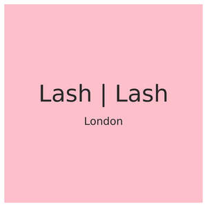

Trade Mark Journal No.2026/006 6 February 2026
UK00004328209 22 January 2026 (3,21,44)

- Class 3
- Long lash mascaras; Eyebrow mascara; Mascara; Hair mascara; Eyeliner; Cosmetic preparations for eye lashes; Eyelash tint; Lip pomades; Eyelashes; Lip makeup; Lip rouge; Lip liner; Eyebrow gel; Eyelash dye; Lip liners; Adhesives for false eyelashes, hair and nails; Mascaras; Eyeliners; Eyelid shadow; Lip polisher; Lip cosmetics; Eyebrow powder; Eyebrow cosmetics; Eyeliner pencils; Lip pencils; Lip gloss palettes; Lip tints; Lip neutralizers; Eyelid doubling makeup; Lip protectors [cosmetic]; Nail makeup; Lip balm; Eyelid pencils; Eyeshadow; Lip glosses; Lip conditioners; Lip gloss; Eyebrow pencils; Pencils (Eyebrow -); Eye concealers; Eye liner; Cosmetics in the form of eye shadow; Cosmetics for eye-lashes; Nail primer [cosmetics]; Nail base coat [cosmetics]; Eye gel; Lip cream; Eye-shadow; Eye makeup; Eye make up remover; Eye make-up removers; Eye make-up; Nail gel; Eyelashes (False -); False eyelashes; Blush pencils; Liners [cosmetics] for the eyes; Cheek rouges; Eye makeup remover; Gel nail removers; Gel eye masks; Eye stylers; Hair balm; Eyebrow styling wax; Lip protectors (Non-medicated -); Stick pomade; Face blusher; Cosmetics for eye-brows; Skin, eye and nail care preparations; Hair gel; Blush; Nail glitter; Nail cosmetics; Lip balm [non-medicated]; Hair spray; Lip balms; Lip stains [cosmetics]; Glitter in spray form for use as a cosmetics; Eyebrow colors in the form of pencils and powders; Artificial eyelashes; Powder for forming sculpted finger nail tips; Hair serums; Hair protection mousse; Hair care serums; Sun protectors for lips; Blusher; Hair moisturisers; Nail strengtheners; Tints for the hair; Cosmetic pencils for cheeks; Eye shadow; Hair pomades; Hair mousses; Nail polish remover pens; Nail polish base coat; Nail paint [cosmetics]; Hair powder; Eye shadows; Cosmetics for the use on the hair; Eyelashes (Adhesives for affixing false -); Adhesives for affixing false eyelashes; Eye cosmetics; Eye pencils; Eye cream; Eye creams; Eye sticks; Eye gels; Eye correction serum; Cosmetic eye pencils; Under eye correctors; Eye brightening correctors; Eye wrinkle lotions; Cosmetic eye gels; Eyes make-up; Colour cosmetics for the eyes; Eyes pencils; Cosmetic creams for firming skin around eyes; Gel eye patches for cosmetic purposes; Eye compresses for cosmetic purposes; Eye care products, non-medicated; Creams (Non-medicated -) for the eyes; Fragrance sachets for eye pillows; Double eyelid tapes; Hand masks for skin care; Skin make-up; Make-up for the face; Cosmetic paste for application to the face to counteract glare; Cleansing products for the eyes; Facial concealer.
- Class 21
- Eye make-up applicators; Applicators for applying eye make-up; Eyelash brushes; Eyebrow brushes; Eyelash combs; Eyeliner brushes; Lip brushes; Wiping cloth for wiping eye glasses; Eyelash Separators; Mascara brushes; Applicator sticks for applying make-up.
- Class 44
- Hairdressing salon services; Salon services (Hairdressing -); Hair salon services; Beauty salon services; Salon services (Beauty -); Nail salon services; Slimming salon services; Hairdressing services; Services of a hair and beauty salon; Beautician services; Beauticians (Services of -); Pet beauty salon services; Hair salon services for children; Hair salon services for military service members; Hair salon services for women; Spa services; Tanning salon and solarium services; Hair dressing salon services; Hair salon services for men; Skin care salon services; Barber services; Services of a barber; Airbrush tanning salon services; Haircare services; Manicure services; Spray tanning salon services; Pedicure services; Cosmetician services; Beauty spa services; Pedicurist services; Aesthetician services; Trichology services; Sun tanning salon services; Tanning (Sun -) salon services; Manicuring services; Barber shop services; Medical spa services; Massage services; Micropigmentation services; Tonsorial services; Beauty consultancy services; Health spa services; Beauty consultation services; Microdermabrasion services; Salons (Hairdressing -); Hairdressing salons; Hair care services; Hair treatment services; Hair styling services; Dermatology services; Solarium services; Services of a solarium; Home-visit manicure services; Make-up services; Providing information relating to beauty salon services; Manicure and pedicure services; Beauty treatment services; Hair tinting services; Cosmetics consultancy services; Pharmacy services; Animal beautician services; Beauty therapy services; Grooming salon services for pet animals; Hair restoration services; Hair perming services; Paramedical services; Dentist services; Beauty care services; Hair extension services; Sauna services; Dental services; Reflexology services; Aromatherapy services; Physiotherapy services; Audiology services; Hair braiding services; Dental clinic services; Therapy services; Beauty advisory services; Facial beauty treatment services; Optometric services; Services for the care of the scalp; Plant care services [horticultural services]; Health clinic services; Nail care services; Hair straightening services; Dentistry services; Hydrotherapy services; Optometry services; Chiropractic services; Veterinary services; Hair cutting services; Hydrotherapy home services; Gynaecology services; Farrier services; Beauty care services provided by a health spa; Eyelash perming services; Eyelash tinting services; Eyelash curling services; Eyelash extension services.
ALVE GROUP LTD